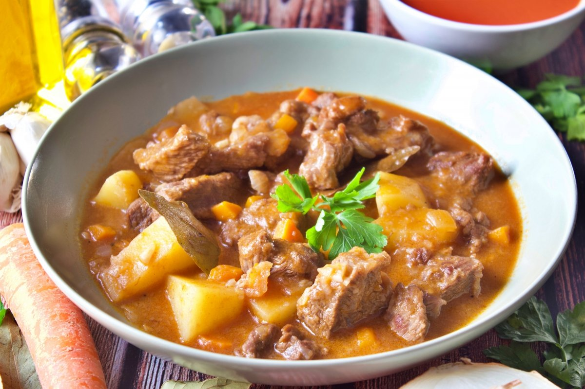

Tripe casserole is a traditional dish of Uruguayan cuisine that stands out for its comforting flavor and soft texture. It is a stew made from tripe, which is a part of the cow's stomach.
Tripe casserole is a traditional dish of Uruguayan cuisine that stands out for its comforting flavor and soft texture. It is a stew made from tripe, which is a part of the cow's stomach.
Chivito is one of the most typical dishes in Uruguay, it is eaten in many ways, especially in three modalities: chivito al pan, Canadian chivito and as the main dish, it is called chivito al plato. It is one of the favorite dishes of Uruguayans and tourists, it is a beef steak, egg, ham, mozzarella cheese, French fries and Russian salad. Learn how to prepare it here, you will surely love it because it is a very complete dish both in flavor and in its nutritional content.
 Uruguay is a country located in the southern cone, its geographical location means that temperatures are low, which is why many of the typical dishes, in addition to having ingredients from the region, are high in calories, ideal to be consumed in winter. Today's recipe is part of the traditional and massive Uruguayan cuisine, because in addition to being low-cost and quick and easy to prepare, it puts an end to anyone's hunger and provides energy that allows them to raise their body temperature.